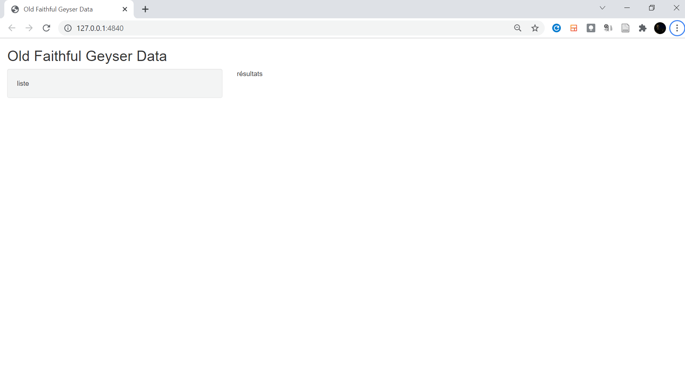
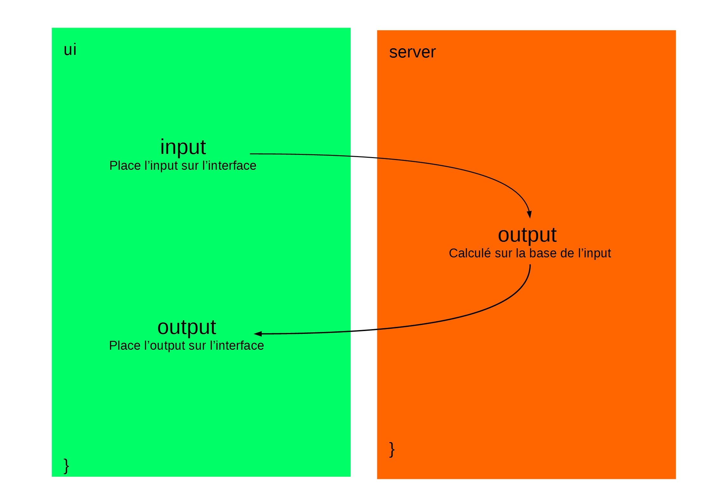
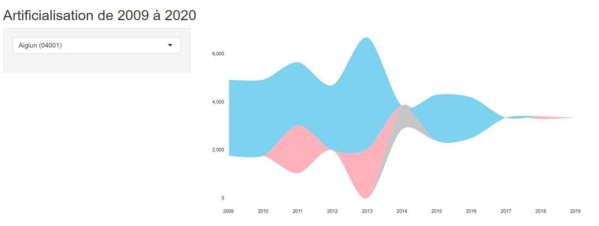
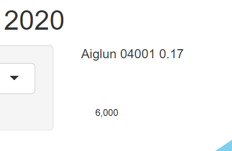
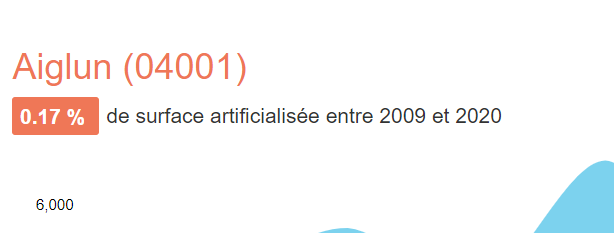

Chapitre 7 Développement d’une application Shiny
Cette animation montre l’évolution de l’application depuis le premier commit jusqu’au dernier.
Nous partons d’une représentation assez basique (poser les bases) vers l’ajout progressif d’éléments d’interaction utilisateur, de représentation de la données, ainsi que d’éléments contextuels textes.
Cette animation montre l’évolution de l’appli depuis le premier commit jusqu’au dernier : 
Le code de l’application est accessible dans le répertoire github shiny-artif-app.
7.1 Préambulle
7.1.1 Template de base
Pour créer une application Shiny, il faut, depuis RStudio, aller dans File > New File > Shiny Web App...

Cela crée une application basique qui sert d’exemple, avec une liste déroulante et un graphique d’exemple :
library(shiny)
ui <- fluidPage(
## Application title
titlePanel("Old Faithful Geyser Data"), ## on changera le nom de l'appli plus tard
sidebarLayout(
sidebarPanel(
"liste"
),
mainPanel(
"résultats"
)
)
)
server <- function(input, output) {
## vide pour le moment
}
## Run the application
shinyApp(ui = ui, server = server)uiest la partie destinée à accueillir les éléments d’interface (esthétique)serverest la partie dans laquelle seront définis les mécanismes d’interaction, d’interrogation et de représentation des données. La partieserverréagit aux contrôles (slider, boutons, …) définis dansui

Dans l’exemple d’application de base proposée par RStudio, le plot réagit au nombre de bins (barres) défini par un slider. Ainsi, on a cette interaction :

En quelque sorte, par analogie avec un modèle MVC (Modèle Vue Contrôleur),
uiconcerne la Vue etserverle Contrôleur.
Dans tous les cas, on a cette modélisation pour les contrôles, sorties dans Shiny :

- un
renderStreamgraphpourra réagir à un input deui, et sera rendu dansuisous la forme destreamgraphOutput - un
renderTextaura son pendanttextOutput - etc…
Ce sont les mêmes conventions qui sont utilisées.
On a des inputs, des fonctions render, et des outputs
► Voir cette version (006bc70d801a290ef1771b69cd2ded14e0b12516)
7.1.2 Poser les bases
Dans un premier temps, on pose les bases, et on efface certains éléments de l’application d’exemple.
► Voir cette version (414c6942ce44edd411e256ab0295bb50de2fa059)
server.R
La partie est laissée vide pour le moment :
server <- function(input, output) {
## vide
}7.1.3 Lecture des données et liste déroulante des communes

On lit les données de flux :
flux <- read_csv("data/obs_artif_conso_com_2009_2020_V2.csv", na = c("", "NULL")) %>%
filter(idreg == "93")Ainsi que les données communales :
## Contours de communes
comms <<- readRDS("data/comms.rds") %>%
filter(INSEE_REG == 93)
## Liste communes
communes <- flux$idcom
names(communes) <- glue("{flux$idcomtxt} ({flux$idcom})")ui.R
On ajoute la liste déroulante des communes maintenant qu’elles ont été lues :
sidebarLayout(
sidebarPanel(
selectInput("communes", label = NULL, choices = communes, selected = NULL),
),
mainPanel(
"Résultats"
)
)► Voir cette version (9c271b706e34afff002b6e6d5df7ef895af1907e)
7.1.4 Affiche un tableau des résultats

On peut afficher un tableau des résultats de flux pour une commune sélectionnée, juste pour tester les mécanismes de sélection, notamment la fonction getStatsFlux vue dans un précédent notebook.
ui.R
mainPanel(
dataTableOutput("tbResults")
)server.R
On ajoute les résultats avec renderDataTable et dataTableOutput :
output$tbResults <- renderDataTable({
codeInsee <- input$communes
df <- flux %>% getStatsFlux(codeInsee)
return(df)
})► Voir cette version (64c7a25268157cf832c9b57dc71b7dfffd663d9e)
7.2 Dataviz
7.2.1 Ajoute le stream

On ajoute le streamgraph.
ui.R
mainPanel(
streamgraphOutput("streamPlot")
)server.R
output$streamPlot <- renderStreamgraph({
myStream <- flux %>% makeStream(codeInsee)
return(myStream)
})► Voir cette version (a402e8385afcf0c350ac0841037a69383e85eace)
7.3 Contexte
7.3.1 Ajoute les infos communales

On peut ajouter des informations assez sommaires sur la commune sélectionnée, sous la forme de texte.
ui.R
mainPanel(
textOutput("txtCommune"),
streamgraphOutput("streamPlot")
)server.R
output$txtCommune <- renderText({
codeInsee <- input$communes
fComm <- flux %>% filter(idcom == codeInsee)
paste(fComm$idcomtxt, fComm$idcom, fComm$artcom0920)
})► Voir cette version (602a3ea312be829aca7146e5563c001cdd33e823)
7.3.2 Ajoute la légende

server.R
Pour la légende, on utilise simplement de l’HTML stylisé, plutôt que la légende du plot.
tagList(
div(
myStream,
style="margin-bottom:20px;"
),
div(
tags$span("Habitat",
style = glue("background-color:{myPalette['blue']};padding:10px;")),
tags$span("Activité",
style = glue("background-color:{myPalette['red']};padding:10px;")),
tags$span("Mixte",
style = glue("background-color:{myPalette['magenta']};padding:10px;")),
tags$span("Inconnu",
style = glue("background-color:{myPalette['grey']};padding:10px;")),
style="text-align:center"
)
)On peut faire du HTML assez avancé avec R Shiny !
► Voir cette version (9c2ab647d7d7376fa84ee19b3239822260933d77)
7.4 Charte
7.4.1 Titre avec couleurs cerema

Ici, on intègre un élément de charte graphique Cerema, notamment la palette graphique de l’établissement au format JSON.
► Voir cette version (c1868418f645a374a8bfda9a3fb11bc0d72a18ec)
7.5 Contexte
7.5.1 Ajoute la surface artificialisée totale
On ajoute une nouvelle information en texte.
► Voir cette version (9c6f9bed953ea15b948fa371a1d988df5acd27ee)
7.6 reactive
7.6.1 Ajout de reactive fComm
Les variables de type reactive sont très utiles lorsqu’il s’agit de récupérer à plusieurs endroits le résultat d’une variable calculée car cela évite, entre autres, de devoir répliquer les mécanismes de création de cette variable à ces multiples endroits. Aussi, un mécanisme interne permet de ne pas recalculer la variable si elle n’a pas changé avec les nouveaux critères de création.
server.R
fComm <- reactive({
fComm <- flux %>% filter(idcom == input$communes)
return(fComm)
})On peut récupérer les variables comme ceci :
fComm()$artcom0920
fComm()$nafart0920► Voir cette version (739307b7430ab0d52f3c241fd16d4404c80c927b)
7.7 Carto
7.7.1 Ajoute la carte leaflet

ui.R
leafletOutput("mymap")server.R
output$mymap <- renderLeaflet({
leaflet() %>%
addTiles(group = "OSM")
})► Voir cette version (5e5be7cf03e9ad4d145c292477d958af00f76904)
7.7.2 Centre la carte sur PACA
server.R
Pour ajuster la carte sur PACA, on utile la fonction fitBounds.
output$mymap <- renderLeaflet({
bb <- st_bbox(comms) %>% as.numeric
leaflet() %>%
addTiles(group = "OSM") %>%
fitBounds(lng1 = bb[1],
lat1 = bb[2],
lng2 = bb[3],
lat2 = bb[4])
})► Voir cette version (593b2972d14ee8f0f044fb43b2abc41932c4b1ab)
7.7.3 Ajoute les fonds de carte

Ajoutons davantage de fonds cartos, notamment ceux de l’IGN : orthophoto, Plan IGN.
server.R
output$mymap <- renderLeaflet({
leaflet() %>%
addTiles(group = "OSM") %>%
addProviderTiles(providers$CartoDB.PositronOnlyLabels, group = "Villes") %>%
addTiles("http://wxs.ign.fr/choisirgeoportail/wmts?REQUEST=GetTile&SERVICE=WMTS&VERSION=1.0.0&STYLE=normal&TILEMATRIXSET=PM&FORMAT=image/png&LAYER=GEOGRAPHICALGRIDSYSTEMS.PLANIGNV2&TILEMATRIX={z}&TILEROW={y}&TILECOL={x}",
options = c(WMSTileOptions(tileSize = 256),
providerTileOptions(minZoom = 1, maxZoom = 15)),
attribution='<a target="_blank" href="https://www.geoportail.gouv.fr/">Geoportail France</a>',
group = "Plan IGN"
) %>%
addTiles("http://wxs.ign.fr/choisirgeoportail/wmts?REQUEST=GetTile&SERVICE=WMTS&VERSION=1.0.0&STYLE=normal&TILEMATRIXSET=PM&FORMAT=image/jpeg&LAYER=ORTHOIMAGERY.ORTHOPHOTOS&TILEMATRIX={z}&TILEROW={y}&TILECOL={x}",
options = c(WMSTileOptions(tileSize = 256),
providerTileOptions(minZoom = 1, maxZoom = 22)),
attribution='<a target="_blank" href="https://www.geoportail.gouv.fr/">Geoportail France</a>',
group = "Photo aérienne"
) %>%
addLayersControl(baseGroups = c("Photo aérienne", "Plan IGN", "OSM"),
overlayGroups = "Villes",
options = layersControlOptions(collapsed = FALSE)) %>%
fitBounds(lng1 = bb[1], lat1 = bb[2], lng2 = bb[3], lat2 = bb[4])
})► Voir cette version (fb67dcc4b87bc13a8cb81847be5c4d5aee1e2b95)
7.7.4 Coordonnées au clic
Pour trouver les coordonnées au clic, on utile un mécanisme de sélection basé sur input, notamment input$mymap.
A noter que l’on peut aussi réagir au clic sur une entité (
input$mymap_shape_click), voire au passage (input$mymap_shape_mouseover). Voir à ce titre la page dédiée sur R Leaflet.
ui.R
verbatimTextOutput("foo")server.R
output$foo <- renderPrint({
input$mymap_click
})► Voir cette version (a9fd41bd65be309d9a5c9e37835bad164ee9b37c)
7.8 reactive
7.8.1 Rend codeInsee reactive
Le code INSEE est récupéré dynamiquement après un clic sur la carte.
On rend le code INSEE reactive car il sera utilisé à plusieurs endroits : ici ou encore là
► Voir cette version (4ac477bd273eaf5db7b0511764c9555182ef423e)
7.8.2 Ajoute le reactive
On peut créer des reactive en cascade, comme ici, pour fComm() qui s’appuie sur codeInsee()
server.R
fComm <- reactive({
fComm <- flux %>% filter(idcom == input$communes)
fComm <- flux %>% filter(idcom == codeInsee())
return(fComm)
})Pour le streamgraph, on utilise codeInsee() comme ceci :
myStream <- flux %>% makeStream(codeInsee())► Voir cette version (f3d3ffb842c07aaa67a9e4c48b922e8b4fa858dc)
7.9 Refactoring
7.9.1 Fix : ajoute req
Quand les données ne sont pas encore chargées, on peut avoir un rendu bizarre avec un message d’erreur.

Du coup, on introduit la fonction req (pour ‘requiert’) qui exécute la suite seulement si la condition est réalisée :
fComm <- reactive({
req(codeInsee()) ## < ici
fComm <- flux %>% filter(idcom == codeInsee())
return(fComm)
})► Voir cette version (115ac4ea9c236d74fcbfd1cb2d48d3ae6309b063)
7.10 Carto
7.10.1 Ajoute un marqueur

On crée un proxy à la carte pour réaliser plus tard des actions sur celle-ci (zoomer, ajouter des éléments cartos) sans avoir à recalculer la carte (appelée mymap) à chaque fois :
proxy <- leafletProxy("mymap")On ajoute le centroïde de la commune cliquée :
observe({
req(codeInsee())
myComm <- comms %>% filter(INSEE_COM == codeInsee())
## Ajout du marqueur
proxy %>%
clearMarkers() %>%
addMarkers(data = myComm %>% st_centroid)
})► Voir cette version (5821ff9c63199ec0bae647a5874f2080bb9d3d5a)
7.10.2 Ajoute le contour de la commune

On ajoute le contour de la commune (c’est plus sympa) :
proxy %>%
clearShapes() %>%
addPolygons(data = myComm,
color = paletteCerema$secondaire$orange,
weight = 1,
smoothFactor = 0.5,
opacity = 1,
fillOpacity = 0.3,
fillColor = paletteCerema$secondaire$orange,
highlightOptions = highlightOptions(color = paletteCerema$secondaire$orange,
weight = 2,
fillOpacity = 0.1,
bringToFront = TRUE))► Voir cette version (9b4455e5213c849edcdad0a9d2f905f377f2f84a)
7.10.3 Va vers la commune

Le marqueur s’affiche, le contour aussi, mais parfois la commune semble loin, lo i n, l o i n
Du coup, petite astuce ergonomique : au clic, on va automatiquement vers la commune cliquée :
bb <- st_bbox(myComm)
proxy %>%
flyToBounds(lng1 = as.numeric(bb$xmin),
lat1 = as.numeric(bb$ymin),
lng2 = as.numeric(bb$xmax),
lat2 = as.numeric(bb$ymax))► Voir cette version (404f64ab1fbd9fe00dd9da0634faf407007278b5)
7.10.4 La liste déroulante permet d’aller vers une commune

On peut même changer le comportement de la liste déroulante utilisée au début pour afficher les stats (voir cette ligne) pour aller automatiquement vers la commune cliquée :
observeEvent(input$communes, {
codeInsee <- input$communes
bb <- comms %>% filter(INSEE_COM == codeInsee) %>% st_bbox %>% as.numeric
proxy %>% flyToBounds(lng1 = bb[1], lat1 = bb[2], lng2 = bb[3], lat2 = bb[4])
})C’est aussi l’occasion d’introduire observeEvent qui ‘écoute’ les évènements, et qui, ici déclenche une action lorsqu’on choisit un élément dans la liste des communes (input$communes)
► Voir cette version (d295c184cd8801dfdcc4befb414d98ea8c0d4ea9)
7.10.5 Ajoute l’élément vide à la liste des communes

Généralement, le premier élément d’une liste est une instruction type ‘Veuillez choisir une commune’
► Voir cette version (4e5c6628148bb98841d8468d10dea8a69b2e5c6d)
7.11 Refactoring
7.11.1 Précise qu’il faut cliquer sur la carte pour afficher les stats

Au lieu d’utiliser req (voir ce commit) qui conditionne l’affichage à la sélection d’une commune, nous pouvons générer un message pour préciser qu’il faut cliquer sur la carte lorsqu’aucune commune n’a été cliquée.
Si aucune commune n’est sélectionnée : valeur nulle, alors on affiche ce message (Voir la ligne de code) :
if(is.null(codeInsee())) return(tagList(icon("mouse-pointer"), "Cliquez sur la carte pour afficher les statistiques"))► Voir cette version (56fd55bfa4cc066af658f7c779398c95c8276275)
7.12 Dataviz
7.12.1 Ajoute la treemap et supprime la légende

Tiens, comme on y est, pourquoi pas ajouter une treemap.
ui.R
plotlyOutput("treemap")server.R
output$treemap <- renderPlotly({
req(codeInsee())
flux %>% makeTreemap(codeInsee())
})► Voir cette version (1edc95aebfe35df74ca77370b78dc1d0402157a6)
7.13 Refactoring
7.13.1 Sépare en ui.R, server.R et global.R
Lorsque le code d’une application devient conséquent, cela peut être utile, plutôt que d’utiliser un unique fichier app.R, de séparer le contenu dans trois fichiers : ui.R, server.R et global.R
ui.Rcomprend les éléments d’interface auparavant contenus dansui <- fluidPage({...})server.Rcomprend la logique applicative et fonctionnelle de l’application : mécanismes d’interrogation et de représentation des données, auparavant contenue dansserver <- function(input, output) {...}global.Rcomprend les variables utilisées dans l’application.
7.13.2 Au sujet de global.R
Les variables contenues dans global.R deviennent automatiquement globales.
Il n’y a alors plus besoin d’utiliser la double flèche d’assignation des variables globales dans global.R
server.R
Précédemment, on avait ceci dans server.R :
`monNom <<- "Mathieu"7.13.3 global.R
Dans global.R, la variable devient automatiquement globale même avec une assignation simple :
`monNom <- "Mathieu"`► Voir cette version (81991cf6ba1a4abef9df951bcdcc1858d97b6815)
7.13.4 Ajoute un fichier helpers.R
On peut créer un fichier annexe appelé helpers.R (nous aurions également pu l’appeler functions.R) dans lequel stocker les différentes stockées utilisées auparavant dans server.R
Cela a le mérite de rendre le code du fichier server.R plus léger, plus lisible car mettant en évidence les mécanismes de façon macro plutôt que micro avec le détail de leur fonctionnement interne.
Nous faisons appel au fichier helpers.R au sein de global.R
7.13.5 global.R
source("helpers.R", encoding = "UTF-8")► Voir cette version (b6a508c9db407cdc98969b50b80867554978796c)
7.14 Contexte
On ajoute un fichier footer.md qui explique d’où vient l’application, donne les sources.
On l’intègre avec la fonction includeMarkdown
tags$div(
includeMarkdown("footer.md"),
style="font-size:0.8em")